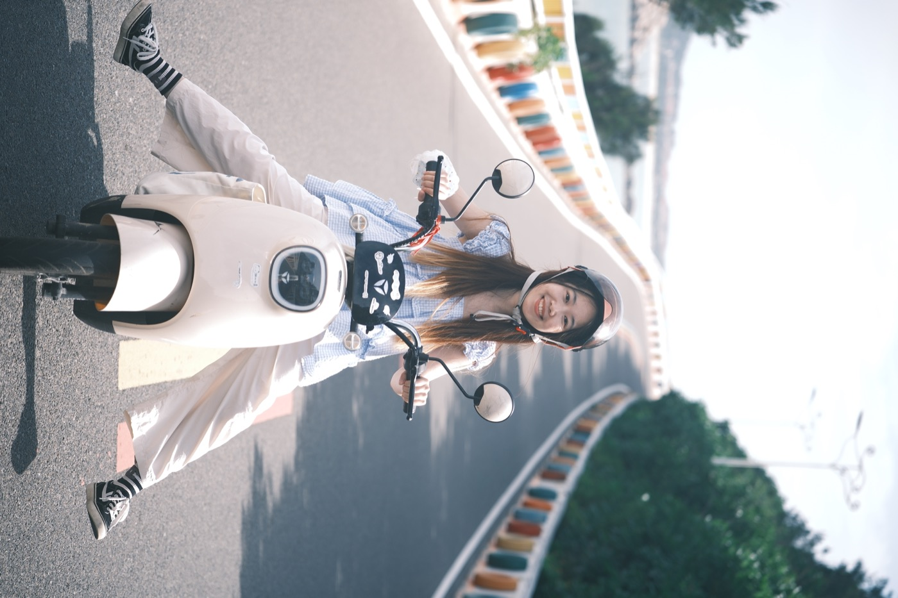
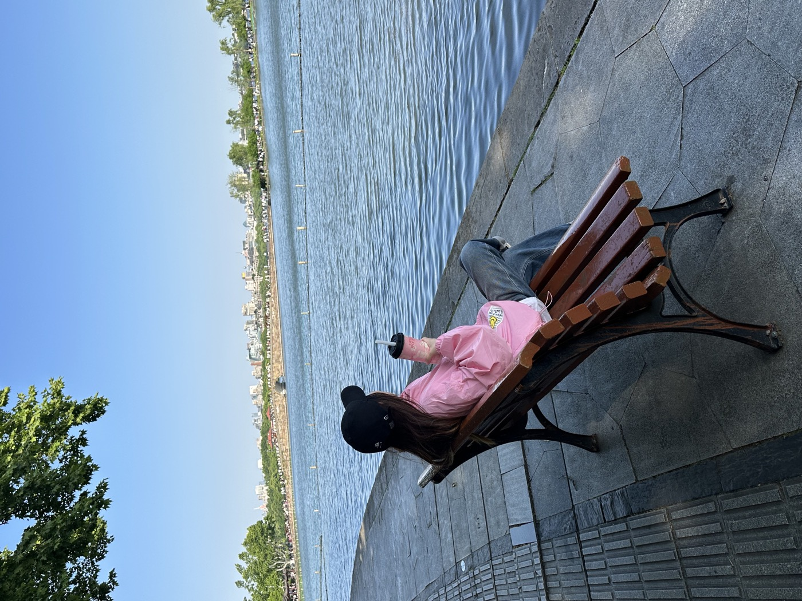
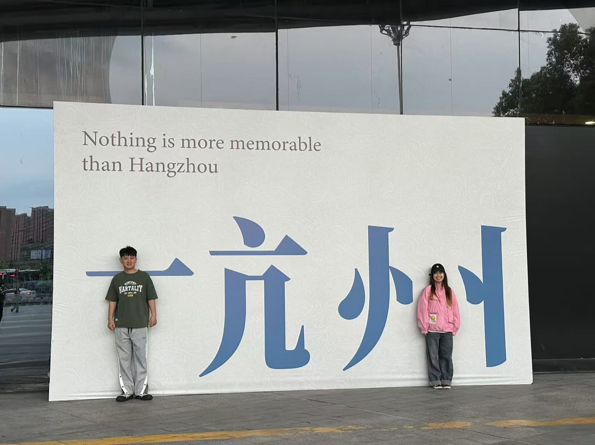
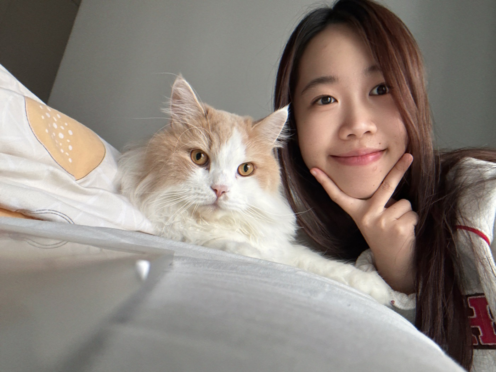
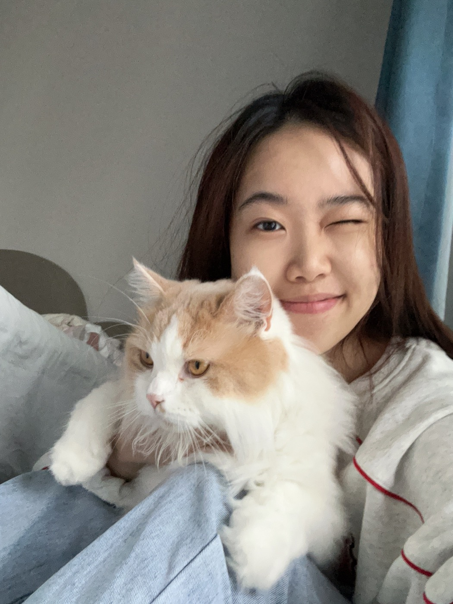
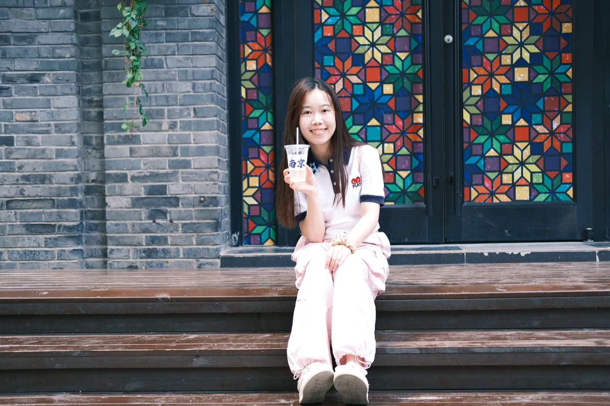
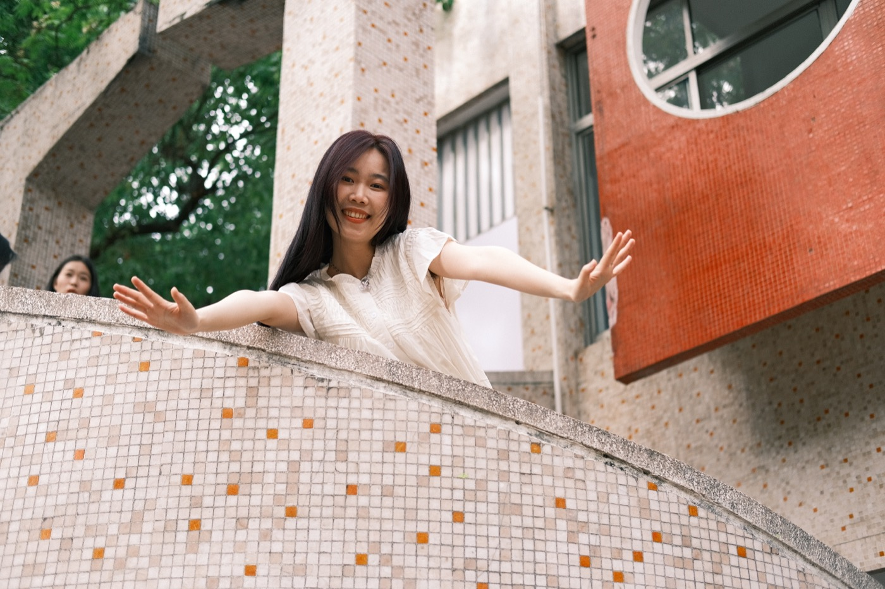
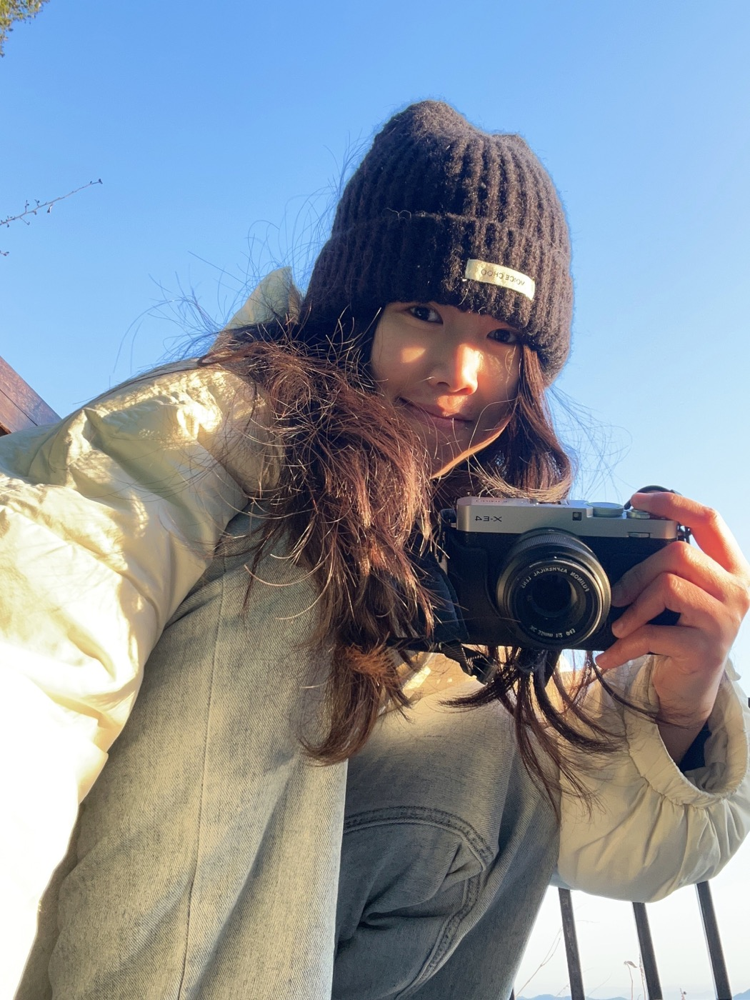
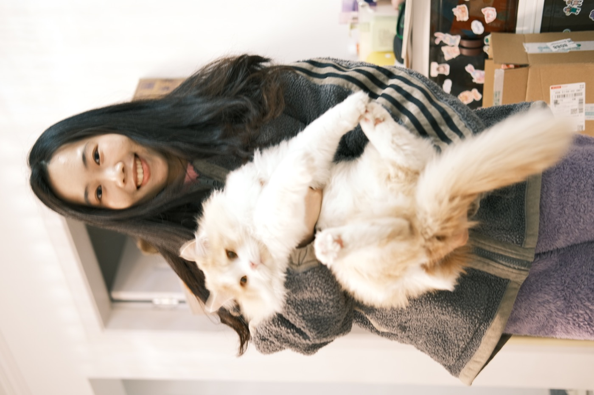

我的状态
白天在需求风暴里对线，晚上在情绪边缘蹦迪。 我可以温柔，但今天真的不想当懂事大人。 该扛的我会扛，不服憋着。
白天在需求风暴里对线，晚上在情绪边缘蹦迪。 我可以温柔，但今天真的不想当懂事大人。 该扛的我会扛，不服憋着。
外表是奶香马卡龙，内核是冷萃冰美式。 逻辑在线，脾气有棱角，爱美也爱赢。 能把混乱理成路，也能把路走成舞台。
我的续命公式：冷萃冰美式 + 奶茶续命 + 深夜散步。 拍照、唱歌、city walk，都是我给灵魂充电的方式。 如果今天有风和晚霞，我就原地复活。








